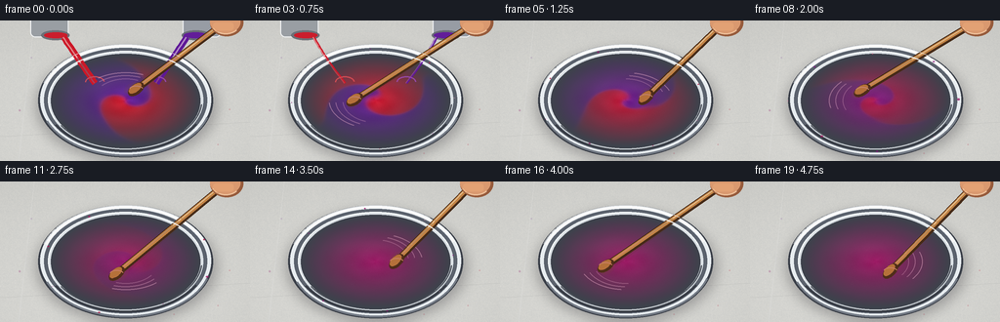
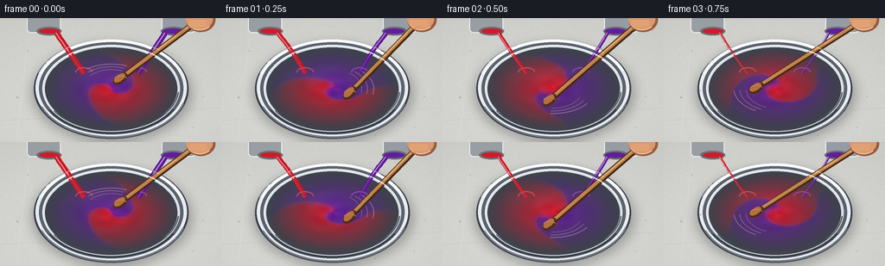

CODING AGENTS AS PIXEL WORLD MODELS
traex/GPT-5.6-Sol · material_0003
点击播放 · 原生 RGB 像素
逐轮保存的候选
回放视频、检查图与代码变化。
每份候选均可单独播放。实际图片检查记录在下方工具轨迹中。
候选 01播放与检查图
点击播放 · 原生 RGB 像素


展开代码变化
--- 上一保存版本
+++ 本次保存版本
@@ -0,0 +1,256 @@
+from pathlib import Path
+import math
+import json
+import numpy as np
+from PIL import Image, ImageDraw, ImageFilter
+import artifact_io
+
+CASE_DIR = Path(__file__).resolve().parent
+spec = json.loads((CASE_DIR / "task_spec.json").read_text())
+W, H, N = spec["width"], spec["height"], spec["frames"]
+S = 3
+w, h = W*S, H*S
+rng = np.random.default_rng(20261110)
+
+# ---------- reusable drawing helpers ----------
+def sc(v):
+ return int(round(v*S))
+
+def box(x0, y0, x1, y1):
+ return tuple(sc(v) for v in (x0, y0, x1, y1))
+
+def poly_ellipse(cx, cy, rx, ry, angle, points=48):
+ ca, sa = math.cos(angle), math.sin(angle)
+ out = []
+ for j in range(points):
+ q = 2*math.pi*j/points
+ x, y = rx*math.cos(q), ry*math.sin(q)
+ out.append((sc(cx + x*ca-y*sa), sc(cy + x*sa+y*ca)))
+ return out
+
+def smoothstep(x):
+ x = np.clip(x, 0.0, 1.0)
+ return x*x*(3.0-2.0*x)
+
+def alpha_composite(base, layer):
+ return Image.alpha_composite(base, layer)
+
+# Fixed, subtle stone tabletop. All texture is procedural and deterministic.
+yy, xx = np.mgrid[0:h, 0:w]
+noise_small = rng.normal(0, 1, (H, W)).astype(np.float32)
+noise = np.asarray(Image.fromarray(noise_small, mode="F").resize((w, h), Image.Resampling.BICUBIC))
+grad = (yy/h)*7 - (xx/w)*2
+base_rgb = np.empty((h,w,3), np.float32)
+base_rgb[...,0] = 211 + grad + noise*1.8
+base_rgb[...,1] = 211 + grad + noise*1.6
+base_rgb[...,2] = 207 + grad + noise*1.3
+# soft vignette to focus attention on the bowl
+vignette = np.clip(((xx-w*.50)/(w*.76))**2 + ((yy-h*.52)/(h*.82))**2, 0, 1)
+base_rgb -= vignette[...,None]*11
+base_rgb = np.clip(base_rgb,0,255).astype(np.uint8)
+base_table = Image.fromarray(base_rgb, "RGB").convert("RGBA")
+# Faint seams in the worktop.
+table_lines = Image.new("RGBA", (w,h), (0,0,0,0))
+tld = ImageDraw.Draw(table_lines)
+tld.line([(0,sc(119)),(w,sc(104))], fill=(120,122,120,23), width=sc(1))
+tld.line([(sc(35),0),(sc(19),h)], fill=(255,255,255,25), width=sc(1))
+base_table = alpha_composite(base_table, table_lines)
+
+# A few restrained, stationary old paint flecks make the surface feel like a studio.
+fleck_layer = Image.new("RGBA", (w,h), (0,0,0,0))
+fd = ImageDraw.Draw(fleck_layer)
+static_flecks = [(20,92,1.0,(142,30,104,65)),(235,91,.8,(190,28,52,55)),
+ (32,38,.6,(116,42,143,45)),(223,127,.7,(189,32,63,48)),
+ (91,133,.5,(110,31,145,44)),(178,136,.6,(200,38,61,45))]
+for x0,y0,r,c in static_flecks:
+ fd.ellipse(box(x0-r,y0-r,x0+r,y0+r), fill=c)
+base_table = alpha_composite(base_table, fleck_layer)
+
+# Bowl geometry
+CX, CY = 128.5, 82.0
+RX, RY = 75.0, 46.0
+red = np.array([211., 25., 43.])
+purple = np.array([99., 28., 157.])
+blend_col = (red + purple) * .5
+
+frames = []
+for fi in range(N):
+ t = fi/(N-1)
+ img = base_table.copy()
+
+ # Bowl shadow, slightly offset downward; layered blur gives contact + ambient shadow.
+ shadow = Image.new("RGBA", (w,h), (0,0,0,0))
+ sd = ImageDraw.Draw(shadow)
+ sd.ellipse(box(38,31,221,143), fill=(34,31,40,86))
+ shadow = shadow.filter(ImageFilter.GaussianBlur(sc(7)))
+ img = alpha_composite(img, shadow)
+ contact = Image.new("RGBA", (w,h), (0,0,0,0))
+ ImageDraw.Draw(contact).ellipse(box(49,37,210,137), fill=(38,35,43,55))
+ contact = contact.filter(ImageFilter.GaussianBlur(sc(2.3)))
+ img = alpha_composite(img, contact)
+
+ # Stainless bowl body/rim, with a bright upper-left and dark lower-right rim.
+ bowl = Image.new("RGBA", (w,h), (0,0,0,0))
+ bd = ImageDraw.Draw(bowl)
+ bd.ellipse(box(39,24,218,140), fill=(59,64,73,255))
+ bd.ellipse(box(41,24.5,216,137.5), fill=(232,237,240,255))
+ bd.ellipse(box(45,28,212,135), fill=(91,98,109,255))
+ bd.ellipse(box(49,31,208,132), fill=(218,224,228,255))
+ bd.ellipse(box(52,34,205,130), fill=(62,66,76,255))
+ # outer reflected bands
+ bd.arc(box(42,25,215,138), 198, 339, fill=(255,255,255,235), width=sc(2.2))
+ bd.arc(box(41,25,217,139), 18, 158, fill=(112,120,132,230), width=sc(2.0))
+ bd.arc(box(46,30,211,134), 28, 151, fill=(42,47,57,220), width=sc(2.0))
+ img = alpha_composite(img, bowl)
+
+ # Paint surface: advect an initially equal left/right split into a tightening spiral.
+ # Contrast fades rapidly late in the shot, physically representing complete blending.
+ X = (xx/S-CX)/RX
+ Y = (yy/S-CY)/RY
+ rr = np.sqrt(X*X + Y*Y)
+ ang = np.arctan2(Y, X)
+ inside = rr <= 1.0
+ blend = smoothstep((t-.06)/.76)
+ rotation = fi*1.38
+ twist = (2.4 + 6.0*t) * (1.0-rr)**2 + 1.15*t*(1.0-rr)
+ src_ang = ang - rotation - twist
+ src_x = rr*np.cos(src_ang)
+ src_y = rr*np.sin(src_ang)
+ # Secondary folding makes viscous red and purple ribbons without random flicker.
+ fold = src_x + (0.10 + .13*t)*np.sin(5.0*src_y - 1.4*rotation) \
+ + .055*np.sin(10*src_y + 3*src_x + .65*rotation)
+ raw = np.tanh(fold*(15.0 + 5*t))
+ contrast = (1.0-blend)**1.38
+ red_fraction = .5 + .5*raw*contrast
+ rgb = purple[None,None,:]*(1-red_fraction[...,None]) + red[None,None,:]*red_fraction[...,None]
+
+ # Rich wet-paint lighting: broad overhead reflection, spiral ridges and a dark edge.
+ broad = 11*np.exp(-(((X+.25)/.62)**2 + ((Y+.38)/.24)**2))
+ ripple = (4.2*np.sin(15*rr - 3.0*ang + fi*1.2) +
+ 2.4*np.sin(23*rr + 2.0*ang - fi*.8))*(1-rr)*(.45+.55*contrast)
+ boundary = np.exp(-np.abs(fold)*22.0)*contrast
+ rgb += (broad + ripple)[...,None]
+ rgb += boundary[...,None]*np.array([16.,11.,18.])
+ rgb -= np.clip((rr-.78)/.22,0,1)[...,None]*15
+ # Fine pigment grain remains subtle rather than video noise.
+ pigment = noise*.8
+ rgb += pigment[...,None]
+ rgba = np.zeros((h,w,4), np.uint8)
+ rgba[...,:3] = np.clip(rgb,0,255).astype(np.uint8)
+ # antialiased edge mask
+ edge_alpha = np.clip((1.01-rr)*S*85,0,255)
+ rgba[...,3] = np.where(inside | (rr<1.015), edge_alpha, 0).astype(np.uint8)
+ paint_layer = Image.fromarray(rgba, "RGBA")
+ img = alpha_composite(img, paint_layer)
+
+ # Paint pours, equal in width and duration. They stop after the first rapid second.
+ # Their colors land on opposite halves while the spoon has already begun stirring.
+ if fi <= 4:
+ pour = Image.new("RGBA", (w,h), (0,0,0,0))
+ pd = ImageDraw.Draw(pour)
+ strength = 1.0 - fi/5.2
+ stream_w = max(sc(1.4), sc(6.5*strength))
+ wob = math.sin(fi*1.8)*2.0
+ # cropped metal pouring cans
+ pd.rounded_rectangle(box(31,-9,70,17), radius=sc(5), fill=(153,158,163,255), outline=(242,244,245,255), width=sc(1))
+ pd.ellipse(box(42,10,71,20), fill=(109,112,119,255))
+ pd.ellipse(box(45,12,69,18), fill=(202,29,44,255))
+ pd.rounded_rectangle(box(187,-9,226,17), radius=sc(5), fill=(151,156,164,255), outline=(242,244,246,255), width=sc(1))
+ pd.ellipse(box(186,10,215,20), fill=(104,108,117,255))
+ pd.ellipse(box(188,12,212,18), fill=(98,29,153,255))
+ # segmented curves provide a smooth, slightly whipping pour
+ rpts=[]; ppts=[]
+ for k in range(18):
+ q=k/17
+ rpts.append((sc(65 + 32*q + wob*math.sin(math.pi*q)), sc(17 + 47*q)))
+ ppts.append((sc(191 - 31*q - wob*math.sin(math.pi*q)), sc(17 + 47*q)))
+ pd.line(rpts, fill=(204,23,39,255), width=stream_w, joint="curve")
+ pd.line(ppts, fill=(94,24,151,255), width=stream_w, joint="curve")
+ if stream_w > sc(2):
+ pd.line([(x-sc(.8),y) for x,y in rpts], fill=(244,72,79,130), width=max(sc(1),stream_w//5))
+ pd.line([(x-sc(.8),y) for x,y in ppts], fill=(158,76,205,120), width=max(sc(1),stream_w//5))
+ # impact crowns
+ pd.arc(box(87,57,107,69), 180, 355, fill=(241,83,88,175), width=sc(1.2))
+ pd.arc(box(150,57,170,69), 182, 357, fill=(165,81,208,170), width=sc(1.2))
+ img = alpha_composite(img, pour)
+
+ # Dynamic paint wake beneath the spoon: several curved wet highlights.
+ a = -1.05 + fi*1.42
+ tipx = CX + 21.5*math.cos(a)
+ tipy = CY + 13.5*math.sin(a)
+ wake = Image.new("RGBA", (w,h), (0,0,0,0))
+ wd = ImageDraw.Draw(wake)
+ deg = math.degrees(a)
+ # Motion streaks follow the circular stirring direction, no diagrammatic arrows.
+ for j in range(3):
+ inset = j*7
+ wd.arc(box(CX-(48-inset), CY-(29-inset*.45), CX+(48-inset), CY+(29-inset*.45)),
+ deg-66-j*5, deg-8, fill=(255,191,216,95-j*18), width=sc(1.05))
+ wd.ellipse(box(tipx-7,tipy-3,tipx+7,tipy+3), fill=(60,8,45,65))
+ img = alpha_composite(img, wake)
+
+ # Spoon: faint previous positions provide true visual motion blur at 4 fps.
+ tool = Image.new("RGBA", (w,h), (0,0,0,0))
+ td = ImageDraw.Draw(tool)
+ handx = 230.0 + 1.5*math.sin(fi*.8)
+ handy = 2.0
+ for lag,alpha in ((.24,32),(.11,58)):
+ aa = a-lag
+ gx = CX+21.5*math.cos(aa); gy=CY+13.5*math.sin(aa)
+ td.line([(sc(handx),sc(handy)),(sc(gx),sc(gy))], fill=(74,48,28,alpha), width=sc(5))
+ td.polygon(poly_ellipse(gx,gy,8.5,4.8,math.atan2(gy-handy,gx-handx),32), fill=(119,79,42,alpha))
+ # current wooden handle with rim shadow and warm highlight
+ td.line([(sc(handx),sc(handy)),(sc(tipx),sc(tipy))], fill=(69,42,23,255), width=sc(7))
+ td.line([(sc(handx-1),sc(handy)),(sc(tipx-1),sc(tipy))], fill=(192,129,68,255), width=sc(4))
+ td.line([(sc(handx-2),sc(handy)),(sc(tipx-2),sc(tipy))], fill=(237,177,103,170), width=sc(1))
+ toolang = math.atan2(tipy-handy,tipx-handx)
+ td.polygon(poly_ellipse(tipx,tipy,9.5,5.3,toolang,44), fill=(79,45,25,255))
+ td.polygon(poly_ellipse(tipx-1,tipy-1,7.5,3.8,toolang,40), fill=(181,113,58,255))
+ td.arc(box(tipx-7,tipy-3.5,tipx+7,tipy+3.5), 190, 345, fill=(240,173,104,170), width=sc(1))
+ img = alpha_composite(img, tool)
+
+ # Cropped hand grips the handle at upper right (kept simple but clearly organic).
+ hand = Image.new("RGBA", (w,h), (0,0,0,0))
+ hd = ImageDraw.Draw(hand)
+ hd.ellipse(box(215,-12,249,16), fill=(151,92,61,255))
+ hd.ellipse(box(215,-10,246,13), fill=(218,153,111,255))
+ hd.rounded_rectangle(box(218,2,239,10), radius=sc(3), fill=(226,161,116,255))
+ hd.arc(box(216,-9,246,14), 40, 154, fill=(244,187,142,210), width=sc(1.2))
+ img = alpha_composite(img, hand)
+
+ # Fresh airborne droplets during vigorous middle phase; deterministic trajectories.
+ if 2 <= fi <= 15:
+ spl = Image.new("RGBA", (w,h), (0,0,0,0))
+ spd = ImageDraw.Draw(spl)
+ vigor = math.sin(math.pi*(fi-2)/14)**.6
+ for k in range(8):
+ da = a + .65 + k*.79
+ radx = 78 + ((k*11 + fi*3)%13)
+ rady = 48 + ((k*7 + fi*2)%8)
+ sx = CX + radx*math.cos(da)
+ sy = CY + rady*math.sin(da)
+ if 5 < sx < 251 and 5 < sy < 139:
+ rr0 = (.6 + (k%3)*.38)*vigor
+ mixq = .5 + .25*math.sin(k*2.2+fi)
+ cc = purple*(1-mixq)+red*mixq
+ spd.ellipse(box(sx-rr0,sy-rr0*.72,sx+rr0,sy+rr0*.72),
+ fill=(int(cc[0]),int(cc[1]),int(cc[2]),195))
+ if k%3==0:
+ spd.ellipse(box(sx-.25,sy-.3,sx+.25,sy+.2), fill=(255,167,201,150))
+ img = alpha_composite(img, spl)
+
+ # Reassert crisp metal rim glints above liquid/streams for depth.
+ glint = Image.new("RGBA", (w,h), (0,0,0,0))
+ gd = ImageDraw.Draw(glint)
+ gd.arc(box(49,31,208,132), 157, 340, fill=(246,249,250,210), width=sc(1.25))
+ gd.arc(box(50,32,207,131), 5, 148, fill=(48,53,63,210), width=sc(1.2))
+ gd.arc(box(40,24,217,139), 198, 309, fill=(255,255,255,180), width=sc(.8))
+ img = alpha_composite(img, glint)
+
+ # Downsample for clean antialiasing and ensure true RGB output.
+ frame = img.convert("RGB").resize((W,H), Image.Resampling.LANCZOS)
+ frames.append(np.asarray(frame, dtype=np.uint8))
+
+frames = np.stack(frames, axis=0)
+artifact_io.save(frames, CASE_DIR)
+print(f"saved {frames.shape[0]} RGB frames at {frames.shape[2]}x{frames.shape[1]}")
可观测工具轨迹
实际执行的命令与返回图片。
命令 1exit 0
/bin/bash -lc "cat prompt.txt && printf '\\n--- GENERATION_RULES.md ---\\n' && cat GENERATION_RULES.md && printf '\\n--- task_spec.json ---\\n' && cat task_spec.json"
命令 2exit 0
/bin/bash -lc "find . -maxdepth 2 -type f -printf '%p\\n' | sort && printf '\\n--- tools ---\\n' && command -v ffmpeg || true; command -v python3 || true; command -v convert || true; command -v blender || true"
命令 3exit 0
/bin/bash -lc 'cat artifact_io.py'
命令 4exit 0
/bin/bash -lc "cat > generate.py <<'PY'
from pathlib import Path
import math
import json
import numpy as np
from PIL import Image, ImageDraw, ImageFilter
import artifact_io
CASE_DIR = Path(__file__).resolve().parent
spec = json.loads((CASE_DIR / \"task_spec.json\").read_text())
W, H, N = spec[\"width\"], spec[\"height\"], spec[\"frames\"]
S = 3
w, h = W*S, H*S
rng = np.random.default_rng(20261110)
# ---------- reusable drawing helpers ----------
def sc(v):
return int(round(v*S))
def box(x0, y0, x1, y1):
return tuple(sc(v) for v in (x0, y0, x1, y1))
def poly_ellipse(cx, cy, rx, ry, angle, points=48):
ca, sa = math.cos(angle), math.sin(angle)
out = []
for j in range(points):
q = 2*math.pi*j/points
x, y = rx*math.cos(q), ry*math.sin(q)
out.append((sc(cx + x*ca-y*sa), sc(cy + x*sa+y*ca)))
return out
def smoothstep(x):
x = np.clip(x, 0.0, 1.0)
return x*x*(3.0-2.0*x)
def alpha_composite(base, layer):
return Image.alpha_composite(base, layer)
# Fixed, subtle stone tabletop. All texture is procedural and deterministic.
yy, xx = np.mgrid[0:h, 0:w]
noise_small = rng.normal(0, 1, (H, W)).astype(np.float32)
noise = np.asarray(Image.fromarray(noise_small, mode=\"F\").resize((w, h), Image.Resampling.BICUBIC))
grad = (yy/h)*7 - (xx/w)*2
base_rgb = np.empty((h,w,3), np.float32)
base_rgb[...,0] = 211 + grad + noise*1.8
base_rgb[...,1] = 211 + grad + noise*1.6
base_rgb[...,2] = 207 + grad + noise*1.3
# soft vignette to focus attention on the bowl
vignette = np.clip(((xx-w*.50)/(w*.76))**2 + ((yy-h*.52)/(h*.82))**2, 0, 1)
base_rgb -= vignette[...,None]*11
base_rgb = np.clip(base_rgb,0,255).astype(np.uint8)
base_table = Image.fromarray(base_rgb, \"RGB\").convert(\"RGBA\")
# Faint seams in the worktop.
table_lines = Image.new(\"RGBA\", (w,h), (0,0,0,0))
tld = ImageDraw.Draw(table_lines)
tld.line([(0,sc(119)),(w,sc(104))], fill=(120,122,120,23), width=sc(1))
tld.line([(sc(35),0),(sc(19),h)], fill=(255,255,255,25), width=sc(1))
base_table = alpha_composite(base_table, table_lines)
# A few restrained, stationary old paint flecks make the surface feel like a studio.
fleck_layer = Image.new(\"RGBA\", (w,h), (0,0,0,0))
fd = ImageDraw.Draw(fleck_layer)
static_flecks = [(20,92,1.0,(142,30,104,65)),(235,91,.8,(190,28,52,55)),
(32,38,.6,(116,42,143,45)),(223,127,.7,(189,32,63,48)),
(91,133,.5,(110,31,145,44)),(178,136,.6,(200,38,61,45))]
for x0,y0,r,c in static_flecks:
fd.ellipse(box(x0-r,y0-r,x0+r,y0+r), fill=c)
base_table = alpha_composite(base_table, fleck_layer)
# Bowl geometry
CX, CY = 128.5, 82.0
RX, RY = 75.0, 46.0
red = np.array([211., 25., 43.])
purple = np.array([99., 28., 157.])
blend_col = (red + purple) * .5
frames = []
for fi in range(N):
t = fi/(N-1)
img = base_table.copy()
# Bowl shadow, slightly offset downward; layered blur gives contact + ambient shadow.
shadow = Image.new(\"RGBA\", (w,h), (0,0,0,0))
sd = ImageDraw.Draw(shadow)
sd.ellipse(box(38,31,221,143), fill=(34,31,40,86))
shadow = shadow.filter(ImageFilter.GaussianBlur(sc(7)))
img = alpha_composite(img, shadow)
contact = Image.new(\"RGBA\", (w,h), (0,0,0,0))
ImageDraw.Draw(contact).ellipse(box(49,37,210,137), fill=(38,35,43,55))
contact = contact.filter(ImageFilter.GaussianBlur(sc(2.3)))
img = alpha_composite(img, contact)
# Stainless bowl body/rim, with a bright upper-left and dark lower-right rim.
bowl = Image.new(\"RGBA\", (w,h), (0,0,0,0))
bd = ImageDraw.Draw(bowl)
bd.ellipse(box(39,24,218,140), fill=(59,64,73,255))
bd.ellipse(box(41,24.5,216,137.5), fill=(232,237,240,255))
bd.ellipse(box(45,28,212,135), fill=(91,98,109,255))
bd.ellipse(box(49,31,208,132), fill=(218,224,228,255))
bd.ellipse(box(52,34,205,130), fill=(62,66,76,255))
# outer reflected bands
bd.arc(box(42,25,215,138), 198, 339, fill=(255,255,255,235), width=sc(2.2))
bd.arc(box(41,25,217,139), 18, 158, fill=(112,120,132,230), width=sc(2.0))
bd.arc(box(46,30,211,134), 28, 151, fill=(42,47,57,220), width=sc(2.0))
img = alpha_composite(img, bowl)
# Paint surface: advect an initially equal left/right split into a tightening spiral.
# Contrast fades rapidly late in the shot, physically representing complete blending.
X = (xx/S-CX)/RX
Y = (yy/S-CY)/RY
rr = np.sqrt(X*X + Y*Y)
ang = np.arctan2(Y, X)
inside = rr <= 1.0
blend = smoothstep((t-.06)/.76)
rotation = fi*1.38
twist = (2.4 + 6.0*t) * (1.0-rr)**2 + 1.15*t*(1.0-rr)
src_ang = ang - rotation - twist
src_x = rr*np.cos(src_ang)
src_y = rr*np.sin(src_ang)
# Secondary folding makes viscous red and purple ribbons without random flicker.
fold = src_x + (0.10 + .13*t)*np.sin(5.0*src_y - 1.4*rotation) \\
+ .055*np.sin(10*src_y + 3*src_x + .65*rotation)
raw = np.tanh(fold*(15.0 + 5*t))
contrast = (1.0-blend)**1.38
red_fraction = .5 + .5*raw*contrast
rgb = purple[None,None,:]*(1-red_fraction[...,None]) + red[None,None,:]*red_fraction[...,None]
# Rich wet-paint lighting: broad overhead reflection, spiral ridges and a dark edge.
broad = 11*np.exp(-(((X+.25)/.62)**2 + ((Y+.38)/.24)**2))
ripple = (4.2*np.sin(15*rr - 3.0*ang + fi*1.2) +
2.4*np.sin(23*rr + 2.0*ang - fi*.8))*(1-rr)*(.45+.55*contrast)
boundary = np.exp(-np.abs(fold)*22.0)*contrast
rgb += (broad + ripple)[...,None]
rgb += boundary[...,None]*np.array([16.,11.,18.])
rgb -= np.clip((rr-.78)/.22,0,1)[...,None]*15
# Fine pigment grain remains subtle rather than video noise.
pigment = noise*.8
rgb += pigment[...,None]
rgba = np.zeros((h,w,4), np.uint8)
rgba[...,:3] = np.clip(rgb,0,255).astype(np.uint8)
# antialiased edge mask
edge_alpha = np.clip((1.01-rr)*S*85,0,255)
rgba[...,3] = np.where(inside | (rr<1.015), edge_alpha, 0).astype(np.uint8)
paint_layer = Image.fromarray(rgba, \"RGBA\")
img = alpha_composite(img, paint_layer)
# Paint pours, equal in width and duration. They stop after the first rapid second.
# Their colors land on opposite halves while the spoon has already begun stirring.
if fi <= 4:
pour = Image.new(\"RGBA\", (w,h), (0,0,0,0))
pd = ImageDraw.Draw(pour)
strength = 1.0 - fi/5.2
stream_w = max(sc(1.4), sc(6.5*strength))
wob = math.sin(fi*1.8)*2.0
# cropped metal pouring cans
pd.rounded_rectangle(box(31,-9,70,17), radius=sc(5), fill=(153,158,163,255), outline=(242,244,245,255), width=sc(1))
pd.ellipse(box(42,10,71,20), fill=(109,112,119,255))
pd.ellipse(box(45,12,69,18), fill=(202,29,44,255))
pd.rounded_rectangle(box(187,-9,226,17), radius=sc(5), fill=(151,156,164,255), outline=(242,244,246,255), width=sc(1))
pd.ellipse(box(186,10,215,20), fill=(104,108,117,255))
pd.ellipse(box(188,12,212,18), fill=(98,29,153,255))
# segmented curves provide a smooth, slightly whipping pour
rpts=[]; ppts=[]
for k in range(18):
q=k/17
rpts.append((sc(65 + 32*q + wob*math.sin(math.pi*q)), sc(17 + 47*q)))
ppts.append((sc(191 - 31*q - wob*math.sin(math.pi*q)), sc(17 + 47*q)))
pd.line(rpts, fill=(204,23,39,255), width=stream_w, joint=\"curve\")
pd.line(ppts, fill=(94,24,151,255), width=stream_w, joint=\"curve\")
if stream_w > sc(2):
pd.line([(x-sc(.8),y) for x,y in rpts], fill=(244,72,79,130), width=max(sc(1),stream_w//5))
pd.line([(x-sc(.8),y) for x,y in ppts], fill=(158,76,205,120), width=max(sc(1),stream_w//5))
# impact crowns
pd.arc(box(87,57,107,69), 180, 355, fill=(241,83,88,175), width=sc(1.2))
pd.arc(box(150,57,170,69), 182, 357, fill=(165,81,208,170), width=sc(1.2))
img = alpha_composite(img, pour)
# Dynamic paint wake beneath the spoon: several curved wet highlights.
a = -1.05 + fi*1.42
tipx = CX + 21.5*math.cos(a)
tipy = CY + 13.5*math.sin(a)
wake = Image.new(\"RGBA\", (w,h), (0,0,0,0))
wd = ImageDraw.Draw(wake)
deg = math.degrees(a)
# Motion streaks follow the circular stirring direction, no diagrammatic arrows.
for j in range(3):
inset = j*7
wd.arc(box(CX-(48-inset), CY-(29-inset*.45), CX+(48-inset), CY+(29-inset*.45)),
deg-66-j*5, deg-8, fill=(255,191,216,95-j*18), width=sc(1.05))
wd.ellipse(box(tipx-7,tipy-3,tipx+7,tipy+3), fill=(60,8,45,65))
img = alpha_composite(img, wake)
# Spoon: faint previous positions provide true visual motion blur at 4 fps.
tool = Image.new(\"RGBA\", (w,h), (0,0,0,0))
td = ImageDraw.Draw(tool)
handx = 230.0 + 1.5*math.sin(fi*.8)
handy = 2.0
for lag,alpha in ((.24,32),(.11,58)):
aa = a-lag
gx = CX+21.5*math.cos(aa); gy=CY+13.5*math.sin(aa)
td.line([(sc(handx),sc(handy)),(sc(gx),sc(gy))], fill=(74,48,28,alpha), width=sc(5))
td.polygon(poly_ellipse(gx,gy,8.5,4.8,math.atan2(gy-handy,gx-handx),32), fill=(119,79,42,alpha))
# current wooden handle with rim shadow and warm highlight
td.line([(sc(handx),sc(handy)),(sc(tipx),sc(tipy))], fill=(69,42,23,255), width=sc(7))
td.line([(sc(handx-1),sc(handy)),(sc(tipx-1),sc(tipy))], fill=(192,129,68,255), width=sc(4))
td.line([(sc(handx-2),sc(handy)),(sc(tipx-2),sc(tipy))], fill=(237,177,103,170), width=sc(1))
toolang = math.atan2(tipy-handy,tipx-handx)
td.polygon(poly_ellipse(tipx,tipy,9.5,5.3,toolang,44), fill=(79,45,25,255))
td.polygon(poly_ellipse(tipx-1,tipy-1,7.5,3.8,toolang,40), fill=(181,113,58,255))
td.arc(box(tipx-7,tipy-3.5,tipx+7,tipy+3.5), 190, 345, fill=(240,173,104,170), width=sc(1))
img = alpha_composite(img, tool)
# Cropped hand grips the handle at upper right (kept simple but clearly organic).
hand = Image.new(\"RGBA\", (w,h), (0,0,0,0))
hd = ImageDraw.Draw(hand)
hd.ellipse(box(215,-12,249,16), fill=(151,92,61,255))
hd.ellipse(box(215,-10,246,13), fill=(218,153,111,255))
hd.rounded_rectangle(box(218,2,239,10), radius=sc(3), fill=(226,161,116,255))
hd.arc(box(216,-9,246,14), 40, 154, fill=(244,187,142,210), width=sc(1.2))
img = alpha_composite(img, hand)
# Fresh airborne droplets during vigorous middle phase; deterministic trajectories.
if 2 <= fi <= 15:
spl = Image.new(\"RGBA\", (w,h), (0,0,0,0))
spd = ImageDraw.Draw(spl)
vigor = math.sin(math.pi*(fi-2)/14)**.6
for k in range(8):
da = a + .65 + k*.79
radx = 78 + ((k*11 + fi*3)%13)
rady = 48 + ((k*7 + fi*2)%8)
sx = CX + radx*math.cos(da)
sy = CY + rady*math.sin(da)
if 5 < sx < 251 and 5 < sy < 139:
rr0 = (.6 + (k%3)*.38)*vigor
mixq = .5 + .25*math.sin(k*2.2+fi)
cc = purple*(1-mixq)+red*mixq
spd.ellipse(box(sx-rr0,sy-rr0*.72,sx+rr0,sy+rr0*.72),
fill=(int(cc[0]),int(cc[1]),int(cc[2]),195))
if k%3==0:
spd.ellipse(box(sx-.25,sy-.3,sx+.25,sy+.2), fill=(255,167,201,150))
img = alpha_composite(img, spl)
# Reassert crisp metal rim glints above liquid/streams for depth.
glint = Image.new(\"RGBA\", (w,h), (0,0,0,0))
gd = ImageDraw.Draw(glint)
gd.arc(box(49,31,208,132), 157, 340, fill=(246,249,250,210), width=sc(1.25))
gd.arc(box(50,32,207,131), 5, 148, fill=(48,53,63,210), width=sc(1.2))
gd.arc(box(40,24,217,139), 198, 309, fill=(255,255,255,180), width=sc(.8))
img = alpha_composite(img, glint)
# Downsample for clean antialiasing and ensure true RGB output.
frame = img.convert(\"RGB\").resize((W,H), Image.Resampling.LANCZOS)
frames.append(np.asarray(frame, dtype=np.uint8))
frames = np.stack(frames, axis=0)
artifact_io.save(frames, CASE_DIR)
print(f\"saved {frames.shape[0]} RGB frames at {frames.shape[2]}x{frames.shape[1]}\")
PY
python3 generate.py
ls -lh pixels.npz index.html inspection.png transition_check.png frames/00.png frames/19.png"命令 5exit 0
/bin/bash -lc "python3 - <<'PY'
import numpy as np
from PIL import Image
from pathlib import Path
p=Path('.')
fs=[np.array(Image.open(p/'frames'/f'{i:02d}.png')) for i in range(20)]
a=np.stack(fs)
print('shape,dtype,min,max:',a.shape,a.dtype,a.min(),a.max())
print('mean abs frame deltas:', np.round(np.abs(np.diff(a.astype(float),axis=0)).mean((1,2,3)),2))
print('files:',len(list((p/'frames').glob('*.png'))))
PY"视觉工具实际返回图片 1

保存候选 1 份；完成命令 5 次；可验证图片返回 1 张。原始 API 响应与完整日志保留在本地。